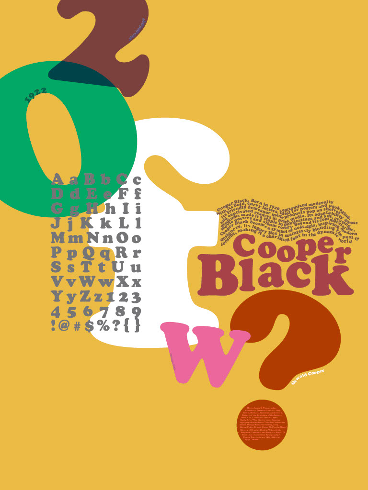
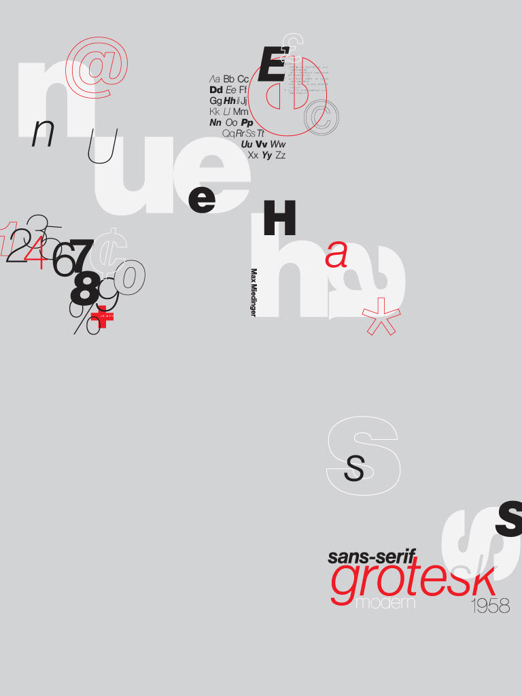
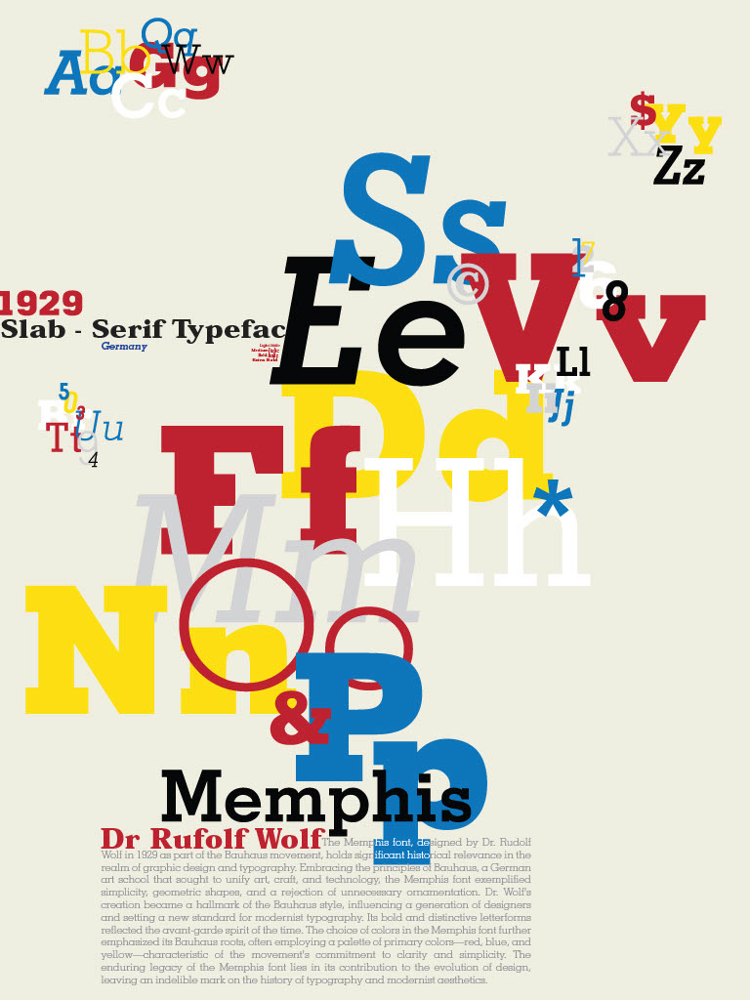

Font Posters
This project focuses on the design and composition of font posters, highlighting the form, history, and characteristics of selected typefaces. Each poster presents a typeface in a structured layout, emphasizing its unique features through typography alone. The project explores typographic hierarchy, spacing, and contrast while maintaining a clear and functional design.


